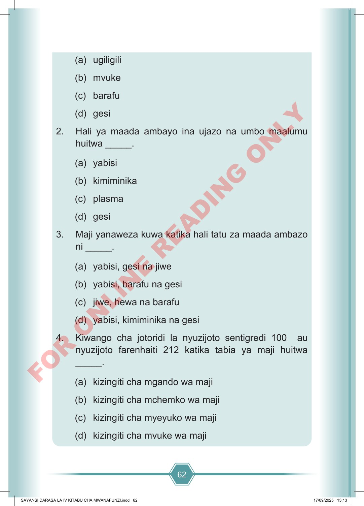

62 (a) ugiligili (b) mvuke (c) barafu (d) gesi 2. Hali ya maada ambayo ina ujazo na umbo maalumu huitwa _____. (a) yabisi (b) kimiminika (c) plasma (d) gesi 3. Maji yanaweza kuwa katika hali tatu za maada ambazo ni _____. (a) yabisi, gesi na jiwe (b) yabisi, barafu na gesi (c) jiwe, hewa na barafu (d) yabisi, kimiminika na gesi 4. Kiwango cha jotoridi la nyuzijoto sentigredi 100 au nyuzijoto farenhaiti 212 katika tabia ya maji huitwa _____. (a) kizingiti cha mgando wa maji (b) kizingiti cha mchemko wa maji (c) kizingiti cha myeyuko wa maji (d) kizingiti cha mvuke wa maji SAYANSI DARASA LA IV KITABU CHA MWANAFUNZI.indd 62 SAYANSI DARASA LA IV KITABU CHA MWANAFUNZI.indd 62 17/09/2025 13:13 17/09/2025 13:13 F O R O N L I N E R E A D I N G O N L Y